| 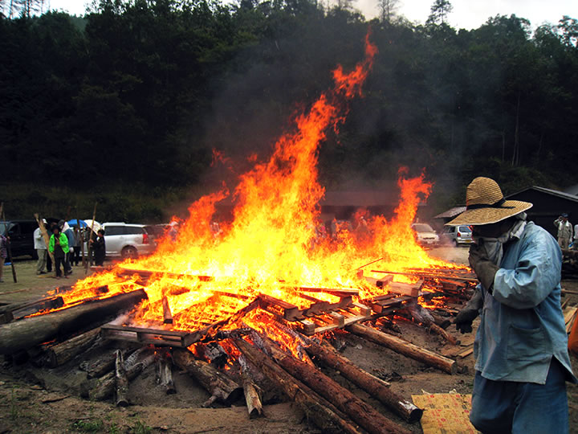 |
「2010秋の縄文野焼き祭り」雨の間隙をぬって無事終了しました。
自然に依拠し太陽と火と風と土の力をいただき、大宇宙を窯として焼き上げる縄文野焼き。
――本来、青空の下で天の太陽と地の炎に焙られながら行なうのが普通なのですが、今年は？
| 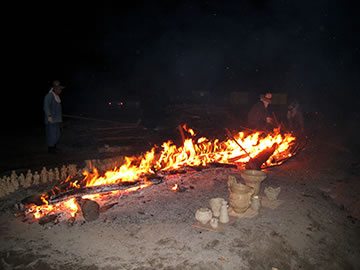 | 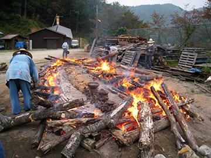 |
| 【夜明け前の火入れ】 | 【法曽焼同好会スタッフの奮闘】 |
=∴=∵=∴=∵=∴=∵=∴=∵=∴=∵=∴=∵=∴=∵=∴=∵=∴=∵=∴=∵=∴=∵=∴=∵=∴=∵=∴=
雨雲が西からせまってきている気象情報を横目に、午前４時に火入れ。
地元法曽焼同好会スタッフも駆けつけ、早朝よりフル回転の奮闘で早い焼き上がりをめざしました。
薄明かりの頃あぶりを終えた作品132人分505点を、暖められた野炉の真ん中に置き、周りを燃えた材木で囲みます。
そこで、なにやら予想より早い雨滴がぽつり。
炎の熱気が新しく生まれようとしている作品の命を守り包んでくれるようにと、天に祈るような気持ちで火を燃やし
続けます。
市内や遠く大阪や福山の方からの援軍も加わり、雨も小康状態を保ってくれるなど。
陶芸教室の子供連れの参加者の皆さんが到着する頃には、炎の勢いが大きく優勢になりました。
攻め焚きの最後は参加者がみな材木をくべ温度も最高900度近くまで上がり素晴らしい焼き上がりです。
焼き上がった作品をテントの下に運び入れるのを待っていたかのように、雨が本降りに。
いつになく切羽詰まったどきどきする縄文野焼きでした。
太陽の顔は臨めなかったものの、確かに雲の上で雨足をしばしとどめておいてくれたのではと思います。
猪風来曰く「本当はこんな危ない日に野焼きはやるもんじゃない。すれすれうまくいったけどこんなに心臓が痛く
なる野焼きは初めてじゃ……」
【今回の野焼きに向け作品を作った人たち】
井倉小学校３．４年生支会（15人） … 52点
草閒台小学校５年生支会（12人） … 36点
思誠小学校愛児会第６支会（30人） … 142点
思誠小学校愛児会第３支会（22人） … 99点
岡山市西七区共の会（19人） … 79点
井倉公民館・法曽焼同好会（19人） … 79点
個人・グループ（12人） … 38点
合計（132人） … 505点
| 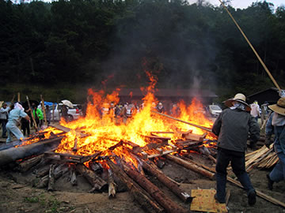 | 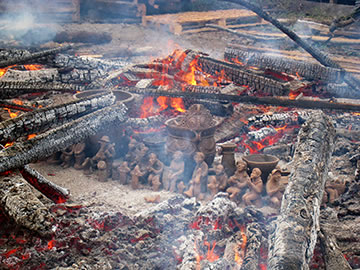 |
| 【子供たちも一緒に参加者みんなで攻め炊き】 | 【作品132人分505点が見事に焼き上がり】 |
=∴=∵=∴=∵=∴=∵=∴=∵=∴=∵=∴=∵=∴=∵=∴=∵=∴=∵=∴=∵=∴=∵=∴=∵=∴=∵=∴=
秋の縄文野焼き大賞をはじめ各賞決定しました。
美術館恒例行事の春と秋の縄文野焼き祭りも各々５回目を迎え、陶芸教室に参加して縄文野焼きに挑戦する人たち
の作品も、質・量ともに充実したものになってきました。
何度も通ってきて技量を身につけた人の作品、子供らしい豊かな発想の楽しい作品など、どれも独創性溢れる
素晴らしいできばえ。
「選別のための賞ではなく励みになる賞を！」ということで、〈縄文野焼き大賞〉など４賞と特別賞が設けられ
ました。
独創的であること、また縄文的な味わいがあることなどを加味し、審査員による選考を経て、以下の方々が選ばれ
ました。
〈縄文野焼き大賞〉 … 土田哲也（新見市哲西町） 創作縄文土器
〈縄文野焼き新見市教育長賞〉 … 森 斗哉（思誠小学校第３支会） 縄文土面
〈縄文野焼き猪風来美術館長賞〉 … 山下龍聖（草閒台小学校５年支会） 縄文シーサー
〈縄文野焼き法曽焼同好会長賞〉 … 谷口政子（井倉公民館） 縄文花器
〈豊かな表現特別賞〉 … 大江由佳（思誠小学校第６支会） 縄文土面
小川零士（井倉小学校３・４年支会） ヒト型土偶
（以上、敬称略）
各受賞者には賞状と猪風来作の縄文ヴィーナス、法曽茶、勾玉つくりセットなどが授与されました。
皆さんおめでとうございます。
| 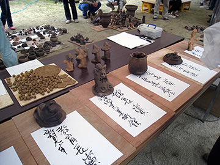 | 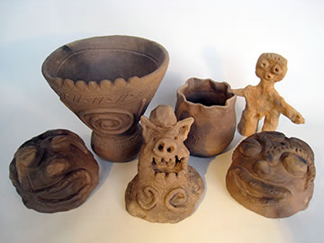 |
| 【作品が一堂に並ぶ】 | 【縄文野焼き受賞作品】 |
=∴=∵=∴=∵=∴=∵=∴=∵=∴=∵=∴=∵=∴=∵=∴=∵=∴=∵=∴=∵=∴=∵=∴=∵=∴=∵=∴=
毎度おなじみになってきた縄文体験コーナーもにぎわっていました。
やわらかい石をやすりで擦って作る勾玉つくりや、野焼き用粘土を使ったにぎり地蔵作り。
子供から年配のご夫婦などが夢中に。帰りにはできたての勾玉ペンダントを首にかけていました。
縄文土器による煮炊きでは２個の土器のひとつが煮えず、子供たちが薪をくべるのを手伝ってくれました。
猪汁は灰が舞うなどワイルドな仕上がりですが野趣溢れる味わい。土器はあっという間に空になりました。
地元法曽焼同好会の婦人たちが早朝から腕によりをかけた、作りたての大山おこわも好評でした。
| 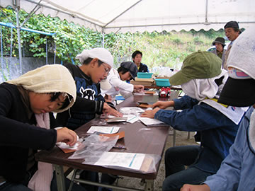 | 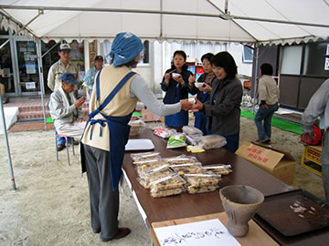 |
| 【縄文体験コーナー】 | 【好評の大山おこわ】 |
=∴=∵=∴=∵=∴=∵=∴=∵=∴=∵=∴=∵=∴=∵=∴=∵=∴=∵=∴=∵=∴=∵=∴=∵=∴=∵=∴=
| 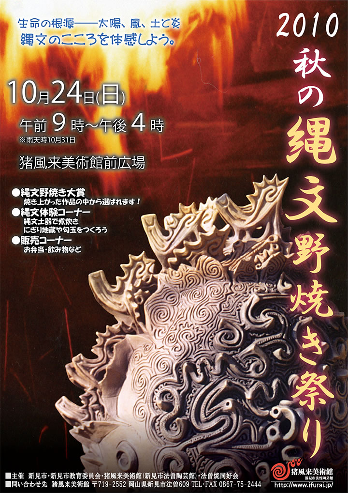 |
| 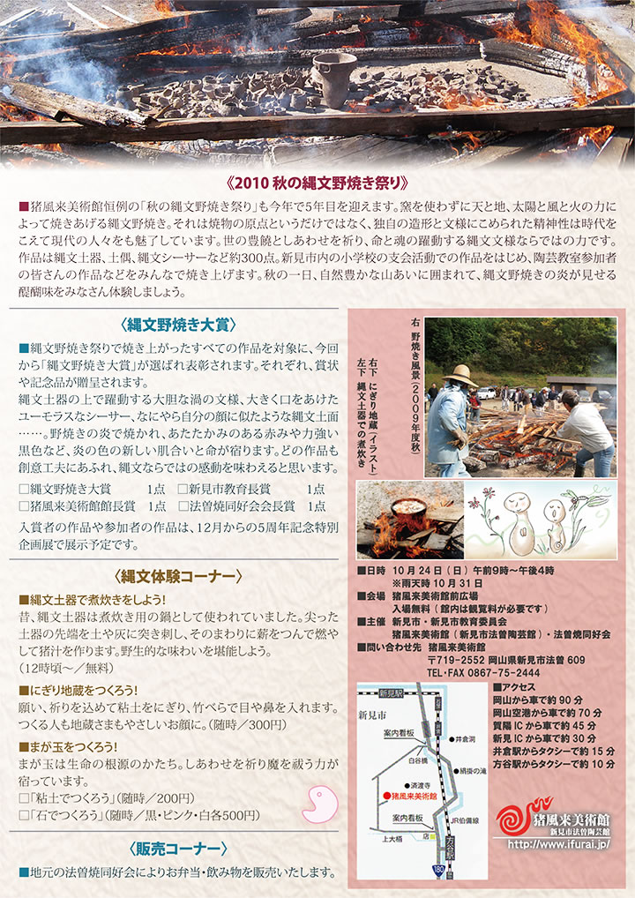 |
| 【「秋の縄文野焼き祭り 2010」チラシ】 →（表面）PDF版を開く →（裏面）PDF版を開く |